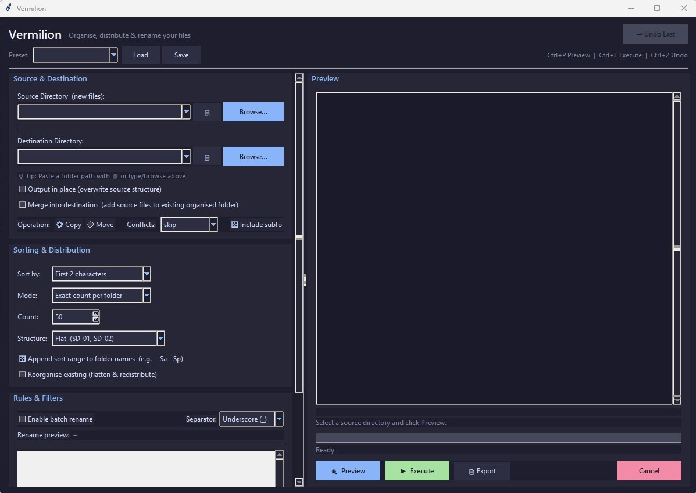
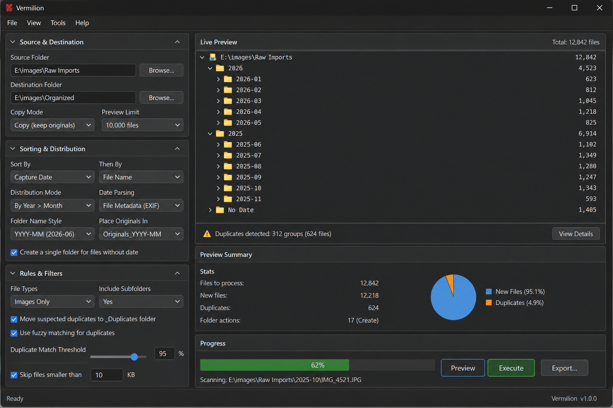
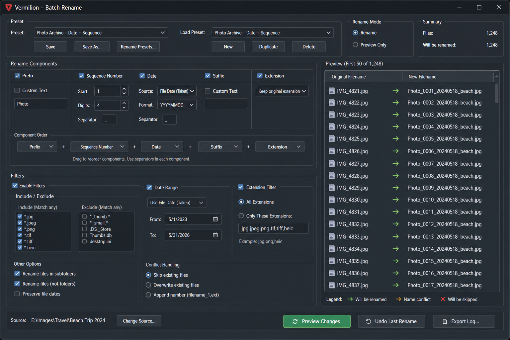

Sort and distribute
Reorganize unsorted folders into cleaner destination structures by character grouping, date, file count, or folder count.
JeffersonWM Utility
A desktop file-organizing tool for sorting, distributing, filtering, and batch-renaming large image collections without external dependencies.
Purpose
Reorganize unsorted folders into cleaner destination structures by character grouping, date, file count, or folder count.
Build filenames from reusable components like custom text, sequence numbers, dates, and original names.
Separate RAW files, exclude by extension or size, preview the resulting tree, and export plans before running the operation.
Main Screen

Trajectory


Highlights
Workflow
Point Vermilion at a source folder, choose a distribution rule, preview the output, then copy or move the files into a cleaner structure.
Use extension filters to move RAW formats into their own holding folder while keeping lighter web formats in the main output flow.
Save a preset that uses custom text, padded sequence numbers, and date fields so large folders can be renamed with a repeatable house style.
Requirements
Requirements:
cd path\to\vermilion
python main.py
python main.py "C:\Users\Bill\Pictures\Unsorted"
Optional Windows Explorer integration is included through
install_context_menu.bat.
Structure
vermilion/
|- main.py
|- app.py
|- utils.py
|- core/
| |- scanner.py
| |- planner.py
| |- renamer.py
| |- executor.py
| |- presets.py
| `- recents.py
|- panels/
| |- source_panel.py
| |- options_panel.py
| |- rules_panel.py
| `- preview_panel.py
|- presets/
|- install_context_menu.bat
`- README.md